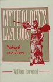

Eusebius quotes from Papias on the Gospel of Mark in Hist. Eccl. iii. 39 as follows:
For information on these points, we can merely refer our readers to the books themselves; but now, to the extracts already made, we shall add, as being a matter of primary importance, a tradition regarding Mark who wrote the Gospel, which he [Papias] has given in the following words: "And the presbyter said this. Mark having become the interpreter of Peter, wrote down accurately whatsoever he remembered. It was not, however, in exact order that he related the sayings or deeds of Christ. For he neither heard the Lord nor accompanied Him. But afterwards, as I said, he accompanied Peter, who accommodated his instructions to the necessities [of his hearers], but with no intention of giving a regular narrative of the Lord's sayings. Wherefore Mark made no mistake in thus writing some things as he remembered them. For of one thing he took especial care, not to omit anything he had heard, and not to put anything fictitious into the statements." This is what is related by Papias regarding Mark.
Irenaeus wrote (Against Heresies 3.1.1): "After their departure [of Peter and Paul from earth], Mark, the disciple and interpreter of Peter, did also hand down to us in writing what had been preached by Peter." Note that Irenaeus had read Papias, and thus Irenaeus doesn't provide any independent confirmation of the statement made by the earlier author.
However, there are two other pieces of external evidence that may confirm that the author of the Gospel of Mark was a disciple of Peter. Justin Martyr quotes from Mark as being the memoirs of Peter (Dial. 106.3). In Acts 10:34-40, Peter's speech serves as a good summary of the Gospel of Mark, "beginning in Galilee after the baptism that John preached." Finally, there was not an extremely strong motivation for the early church to attribute the second gospel to one obscure Mark, the disciple of Peter, instead of directly to an apostle. Thus, the tradition of Markan authorship is to be taken seriously.
Nevertheless, even though the author may have been a disciple of Peter at some point, the author of the Gospel of Mark needn't have limited himself to Peter's preaching for his material. The NAB introduction says: "Petrine influence should not, however, be exaggerated. The evangelist has put together various oral and possibly written sources--miracle stories, parables, sayings, stories of controversies, and the passion--so as to speak of the crucified Messiah for Mark's own day."
John P. Meier provides an example in which the author of Mark shows himself to be dependent on oral tradition. The story of the feeding of the multitude is found twice in Mark and once in John. Meier writes (A Marginal Jew, v. 2, pp. 965-6): "This suggests a long and complicated tradition history reaching back to the early days of the first Christian generation. Prior to Mark's Gospel there seems to have been two cycles of traditions about Jesus' ministry in Galilee, each one beginning with one version of the feeding miracle (Mk 6:32-44 and Mk 8:1-10). Before these cycles were created, the two versions of the feeding would have circulated as independent units, the first version attracting to itself the story of Jesus' walking on the water (a development also witnessed in John 6), while the second version did not receive such an elaboration. Behind all three versions of the miracle story would have stood some primitive form."
The author of the Gospel of Mark does indeed seem to lack first-hand knowledge of the geography of Palestine. Randel Helms writes concerning Mark 11:1 (Who Wrote the Gospels?, p. 6): "Anyone approaching Jerusalem from Jericho would come first to Bethany and then Bethphage, not the reverse. This is one of several passages showing that Mark knew little about Palestine; we must assume, Dennis Nineham argues, that 'Mark did not know the relative positions of these two villages on the Jericho road' (1963, 294-295). Indeed, Mark knew so little about the area that he described Jesus going from Tyrian territory 'by way of Sidon to the Sea of Galilee through the territory of the Ten Towns' (Mark 7:31); this is similar to saying that one goes from London to Paris by way of Edinburgh and Rome. The simplist solution, says Nineham, is that 'the evangelist was not directly acquainted with Palestine' (40)."
Nineham states the following on the provenance of the Gospel of Mark (Saint Mark, pp. 42-43): "of all the places suggested Rome has been by far the most popular, and, so far as the evidence permits of any conclusion, it is perhaps the most likely. The Gospel of Mark was clearly intended for a church consisting largely of Gentile members (see e.g. 7:3f., 11:13, 12:42), and one which had known, or was expecting, persecution for faith (cf. 8:34-38, 10:38f., 13:9-13); all this is compatible with Roman origin, and if the Gospel circulated from the beginning with the authority of the Roman church it is easier to explain how it so soon won an authoritative position."
Reginald Fuller states the following on the provenance of Mark (A Critical Introduction to the New Testament, p. 107): "Irenaeus' statement (see above) that Mk was written in Rome has been widely accepted by modern scholars (e.g. Streeter). Attempts have been made to support it by internal evidence (e.g. Latinisms like 'denarius', 'legion'). Such Latinisms, however, are the vocabulary of military occupation and speak as much for Palestinian provenance as for Rome. The connection Mark-Peter-Rome looks like second-century guessword based on 1 Pet 5:13. Remove the Petrine connection, and the question of provenance becomes wide open. Mk is a Hellenistic gospel. Its language is Gk, and, as we shall see, its traditions, especially in their christology, contain Hellenistic elements, which Mk qualifies in a Pauline direction. Yet its traditions are also in close touch with Palestinian tradition, not only with earlier tradition as in the miracle stories (Jesus as the eschatological prophet), but in such recent material as parts of the Little Apocalypse. We are drawn to suggest Antioch as the most likely place of origin."
A general range of dating for the Gospel of Mark can be suggested with reference to the external evidence. If the tradition of Markan authorship is accepted, Irenaeus implies that the Gospel of Mark was written after the death of Peter, traditionally set in Rome c. 65 CE. If the tradition is not accepted, as Nineham states (op. cit., p. 41), "Those who are cautious about accepting the Papias tradition can hardly put the lower limit much earlier, for they must allow time for the oral tradition to have developed in the way described above." The terminus ad quem is set by the incorporation of Mark into the Gospel of Matthew and into the Gospel of Luke. If the Gospel of Matthew was written in the last two decades of the first century, the most probable range of dating for the Gospel of Mark is from 65 to 80 CE.
This range can be further qualified by an examination of the internal evidence.
Mark's "Little Apocalypse" in chapter 13 is usually regarded as speaking of the events of the First Jewish Revolt, which took place 66-70 CE. The events surrounding the fall of Jerusalem and the destruction of the Temple left a deep impression on the Jews of the time. Jerusalem and the Temple were the center of religious life for Palestinian Jews, and the war with the Romans had ravaged the countryside and left thousands dead. Thus, it is understandable that some would associate these horrible events with the end times. An exegesis of Mark 13 shows how the author's description corresponds with the calamities of the First Jewish Revolt.
The destruction of the Temple, which happened in 70 CE, is mentioned in v. 1-4. Leaving the temple area, a disciple said: "Teacher, look at the huge blocks of stone and the enormous buildings!" Facing the temple, Jesus responds: "You see these great buildings? Not one stone will be left upon another - all will be torn down." Peter and some others then question Jesus about the signs of the apocalypse privately, a tell-tale sign of Mark's redactional hand (instead of earlier well-known tradition).
In v. 5-8, the author speaks of "wars and rumours of wars," but "this is not yet the end." If ch 13 is speaking of the First Jewish Revolt, this indicates that some had predicted earlier that the end would come during the war, a view which the author must deny (or perhaps slightly modify, cf v. 24) after the fighting has ended. The author speaks of "famine" during this time when nation is rising against nation, and Josephus reports the horrors of pestilence and famine during the First Jewish Revolt.
Concerning v. 9-13, Robert Funk writes in The Five Gospels: "The sayings in Mark 13:9-13 all reflect detailed knowledge of events that took place - or ideas that were current - after Jesus' death: trials and persecutions of Jesus' followers, the call to preach the gospel to all nations, advice to offer spontaneous testimony, and the prediction that families would turn against one another are features of later Christian existence, not of events in Galilee or Jerusalem during Jesus' lifetime. The note about children betraying their parents may be an allusion to the terrible calamities that took place during the siege of Jerusalem (66-70 C.E.)"
Verse 14 says: "When you see the 'Abomination of Desecration' standing where it should not be - let the reader take note! - those in Judea must flee to the mountains." The parenthetical comment to "let the reader take note" underscores the fact that this speech was written for the Christians of Mark's time. The contemporary audience of Mark would understand very well what he was talking about, although the 'Abomination of Desecration' is a cryptic reference to us. The phrase is borrowed from Dn 9:27, where it refers to Antiochus profaning the Temple of Jerusalem c. 165 BCE (probably with an image of Zeus), although it has been adapted to the evangelist's times. In the context of the First Jewish Revolt, this probably refers to the profanation of the Temple by the Romans. Josephus tells us that the victorious soldiers raised their imperial standards and worshiped them in the holy place (Wars of the Jews 6.6.1).
Randel Helms comments on the reference to Daniel in the Gospel of Mark (op. cit., p. 8):
So Daniel's "time, times, and half a time" is three and a half years, or twelve hundred and ninety days. The author of Daniel was referring, with the "abomination of desolation," to the altar to Zeus that Antiochus IV established in the Jerusalem temple in December, 167 B.C.E., as I Maccabees 1:54 tells us. But in Mark's eyes, Daniel really was speaking of Mark's own time, the "time of the end," when another "abomination of desolation" was set up in the Jerusalem temple. For according to Josephus, the regular offering ceased in the temple in July, 70, the temple was burnt in August, and later that month the imperial Roman eagle was set up in the temple precincts and sacrifice was offered to it; then in September the temple was razed to the ground (Josphus, The Jewish War, Chapters 6, 7). Three and a half years thereafter would be early in the year 74. It should not be surprising that a first-century author might apply the Book of Daniel to the Jewish War; Josephus himself did so, he tells us, in the summer of the year 70, at the height of the seige (Josephus, 309).
Helms goes on to argue that the reference to the messianic pretenders in 13:21-22 suggests that the author of Mark wrote shortly after 70 rather than a few years before. Josephus tells us about Menahem, the son of Judas, as well as Simon, the son of Gioras, "both of whom were striking messianic pretenders." Helms states, "As far as Mark was concerned the Jewish War was over; there remained only the cosmic disorder and the Second Coming."
Josephus refers to false prophets during the final phase of the Roman assault on the Temple as it was engulfed in flame: "A false prophet was the occasion of these people's destruction, who had made a public proclamation in the city that very day, that God commanded them to get upon the temple, and that there they should receive miraculous signs of their deliverance. Now there was then a great number of false prophets suborned by the tyrants to impose on the people, who denounced this to them, that they should wait for deliverance from God; and this was in order to keep them from deserting, and that they might be buoyed up above fear and care by such hopes." (Wars of the Jews 6.5.2)
Possibly the inspiration for v. 15-18, Christians abandoned Jerusalem before the siege began and fled to the city of Pella according to Eusebius (Hist. Eccl. 3.5.3).
The horrors of the war seem to be vivid in the author's memory (v. 19), and the tribulations are probably still ongoing in the aftermath, as the author wishes for an end to them (v. 20). Although the author rejects the claims of others who recently said that the Lord will return during the war (v. 7), he adapts this by saying that the day of the Lord is 'near, even at the door' during this period of tribulation (v. 28-29). He assures his readers that they will see the Parousia before the first Christian generation passes away (v. 30). This indicates that Mark was written shortly after the fall of Jerusalem that occured in 70 CE.
J.D. Crossan writes in The Historical Jesus that Jesus "said, according to Mark 13:24, that there would be a clear but not prolonged interval between the Temple's destruction and his own return. Mark's community was living in that interval, having rejected those false but Christian prophets who, in 13:5-8 and 21-23, had proclaimed Jesus' return at...the destruction of the Temple in the First Roman-Jewish War of 66-70 C.E. Mark, in other words, clearly and deliberately separates all that led up to the parousia of Jesus in 13:24-37. And all is placed on the prophetic lips of Jesus himself. That, says Mark, was what he actually said."
Paul J. Achtemeier writes (The Anchor Bible Dictionary, v. 4, p. 545): "the assurance that one cannot calculate by historic events when the risen Christ would return in glory, found again and again in chap. 13, may have been designed to head off discouragement when the destruction of the temple in Jerusalem was not immediately followed by that return."
Robert Eisenman writes (James the Brother of Jesus, p. 56): "From the same internal textual considerations already noted, it is possible to show that Mark, too, was written after the fall of the Temple in 70 CE. The whole nature of its anti-Jewish polemic and opposition to the family and brothers of Jesus on the one hand and its pro-Peter orientation on the other distinguish it as having appeared after the destruction of the Jerusalem centre - in particular, after the attempt by the Roman Community to represent itself as the legitimate heir to Jesus and the Messianic movement he represented, however absurd, historically speaking, that might have seemed to any objective observer at the time."
Eisenman comments (op. cit., p. 56): "There are, in fact, several veiled references to events of this kind in the Gospel of Mark, for instance, in the introuduction to the Little Apocalypse, where Jesus is made to predict the utter destruction of the Temple (13:1-2) and in the Apocalypse itself, when the Pauline Mission is anticipated (13:9-10) - but, even more importantly, in the depiction of the rending of the Temple veil at his death (Mark 15:38 and pars.). This veil was more than likely damaged in the final Roman assault on the Temple or in the various altercations and the turmoil preceding this. Josephus specifically refers to it, along with its replacement materials, as having been delivered over to the Romans after the assault on the Temple. It was doubtless on display in Rome, damaged or otherwise, along with the rest of the booty Josephus describes as having been paraded in Titus' Triumph."
 Many scholars see another historical allusion in Mk 5:8-13 to a 'Legion' which had a pig as its emblem and which Josephus tells us remained in Jerusalem in the war's aftermath (Wars of the Jews 7.1.3). William Harwood writes in Mythology's Last Gods: "Since the fall of the city a few months earlier [in 70 C.E.], Jerusalem had been occupied by the Roman Tenth Legion [X Fretensis], whose emblem was a pig. Mark's reference to about two thousand pigs, the size of the occupying Legion, combined with his blatant designation of the evil beings as Legion, left no doubt in Jewish minds that the pigs in the fable represented the army of occupation. Mark's fable in effect promised that the messiah, when he returned, would drive the Romans into the sea as he had earlier driven their four-legged surrogates."
Although the author of the Gospel of Mark is suffering through tribulations and his traditions betray resentment of Roman power, he wants to distance himself from the Jews who are at the cause of the revolt. At the same time he wants to present Christianity as something that is politically innocuous to the Roman authorities. For this reason there is a tendency to exonerate Pilate and blame the Jews in Mark (cf. 15:9-15), a tendency that becomes even more exaggerated in later times. In reality the anti-semitic prefect would probably not have given Jesus the time of day, especially if he represented a threat to order during the Passover festival. There is no other tradition of a custom to release prisoners during a festival, and such open amnesty goes against administrative wisdom. J.D. Crossan sees in the story of Barabbas a condemnation of the Jews who chose insurrection (Jesus: A Revolutionary Biography, p. 143): "In Greek the technical term for such a rebel bandit is lestes, and that is exactly what Barabbas is called. He was a bandit, a rebel, an insurgent, a freedom fighter - depending always, of course, on your point of view. But Mark was written soon after the terrible consummation of the First Roman-Jewish War in 70 C.E., when Jerusalem and its Temple were totally destroyed. We already saw how the Zealots, a loose coalition of bandit groups and peasant rebels forced into Jerusalem by the tightening Roman encirclement, fought within the city for overall control of the rebellion in 68 C.E. There, says Mark, was Jerusalem's choice: it chose Barabbas over Jesus, an armed rebel over an unarmed savior. His narrative about Barabbas was, in other words, a symbolic dramatization of Jerusalem's fate, as he saw it."
The most probable understanding of the "Little Apocalypse" is that it was written with reference to the events of the First Jewish Revolt: The Temple is destroyed (v. 2), there are wars and threats of wars (c. 7), nation rises against nation and there is famine (v. 8), many are brought into custody (v. 11), one should flee from Judea (v. 14), there are false prophets (v. 22), and all this is "more distressful than any time between the work of creation and now, and for all time to come."
Because of the historical allusions found in the Gospel of Mark to the events of the First Jewish Revolt, the period of five years between 70 and 75 CE is the most plausible dating for the Gospel of Mark within the broader timeframe indicated of 65 to 80 CE.
Go to the Chronological List of all Early Christian Writings
Please buy the CD to support the site, view it without ads, and get bonus stuff!
Early Christian Writings is copyright ©
Peter Kirby <E-Mail>.
Kirby, Peter. "Gospel of Mark." Early Christian Writings. <http://www.earlychristianwritings.com/mark.html>.